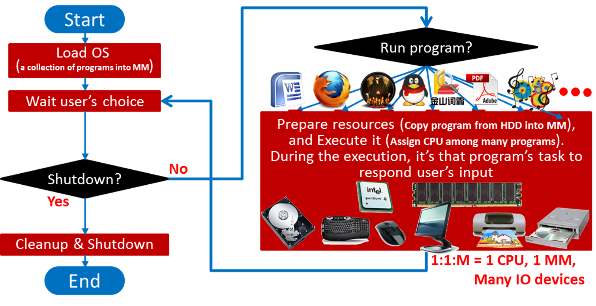
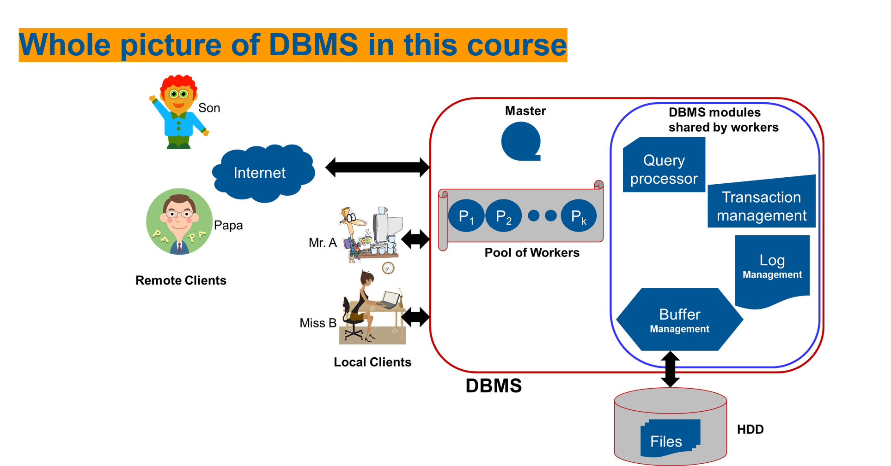
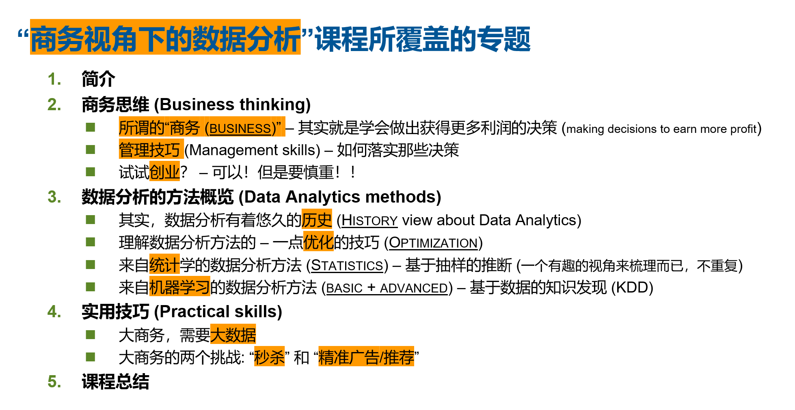
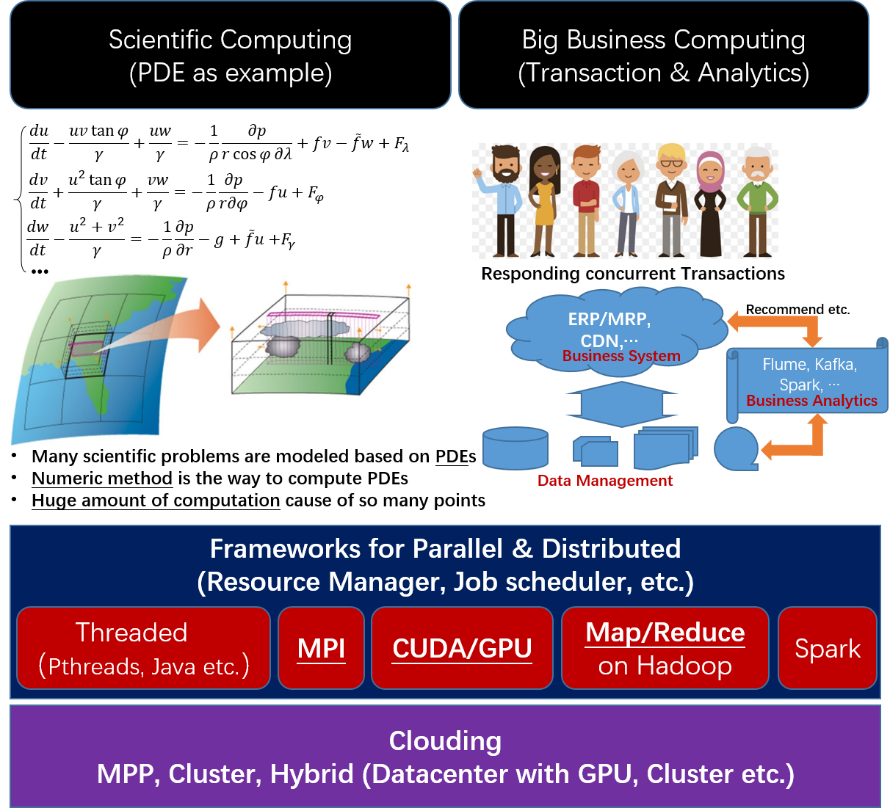

Overview
I love TEACHING cause it's a GREAT way to improve myself a lot! During my teaching, I tried to follow the principles below to teach the courses well:
— Big picture of the related topics for theories and practices.
— Illustrate the topics always with intuitive examples.
— Introduce real and high-level applications into classes.
This web is used to share the courses I taught so far, which is a souvenir for myself.
Courses
| Course Name | Description | Galery |
|---|---|---|
| A First Course for Computer Science |
For most CS students in China, it's important for them to successfully jump into the CS's philosophy (also called Computational Thinking in recent years). This course aims to illustrate the freshmen a whole picture covering the necessary topics which are helpful for them to understand CS with a framework (shown in right). |

|
| An Intuitive Study for Mathematics | Math is critical for the CS. This course demonstrates the students a intuitive way to understand the related topics helpful for them to go deeper in later study and research. By focusing on the introduction of ideas instead of the tedious math formulae. |

|
| Operating System |
As a primary and critical course for CS, many classic courses have been proposed arround the world. My course trys to demonstrate the related topcis in an intuitive way, and also adopt advanced topics so as to cover the latest progresses in HPC, Big Data and Deep Learning etc. Of course all topics are derived from the OS view. There are two parts in this course:
|
 |
| Design and Implementation of DBMS - Taking RDBMS as the instance |
As one of the 3 classical courses in CS (the other twoo are Compiler and OS), many classic courses have been proposed arround the world. My course trys to demonstrate the related topcis in an intuitive way, and also adopt advanced topics so as to cover the latest progresses in Big Data and Data Analytics etc. There are two parts in this course:
|
 |
| Data Analytics under the Business View |
With the explosion of Deep Learning, AI(Artifacial Intelligence), ML (Machine Learning) and Deep Learning etc. are becoming more and more hot in recent years. This course tries to cover those related topics in an interesting way which adopts the business thinking as the framework. To do so, this course provides a big picture as follows:
|
 |
| Large Scale Computing - HPC, Big Data, Deep Learning and beyond |
To some extent, the endeavour to pursue more powerful computing capability is all over the history of our humankind. With the invention of computers, many more different computing architectures are proposed besides the famous von Neumann architecture, which are triggered by large scale data computing like HPC and Big Data etc. It's definitely a MUST course for CS students to know/understand/master the related topics in a whole picture way. To do so, this course provides a big picture as follows in three parts:
|
 |